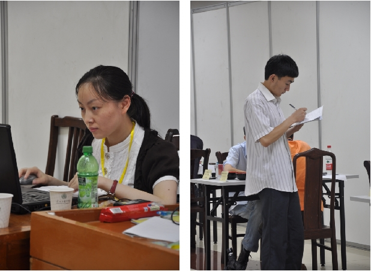
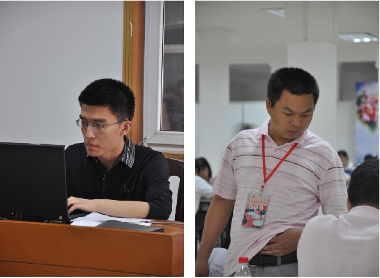
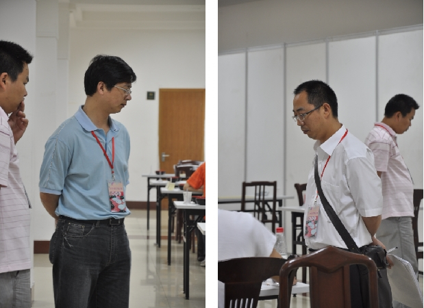
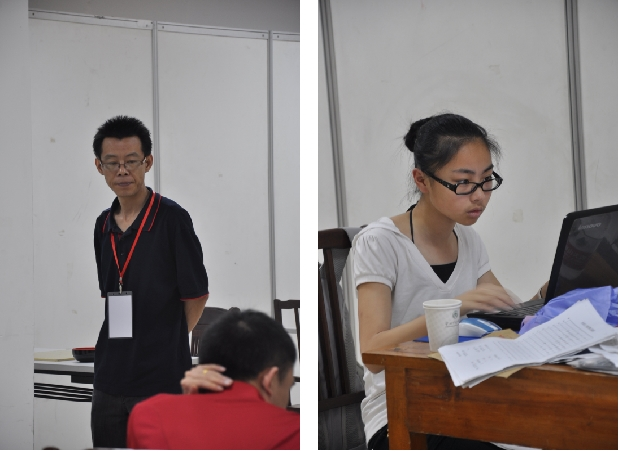
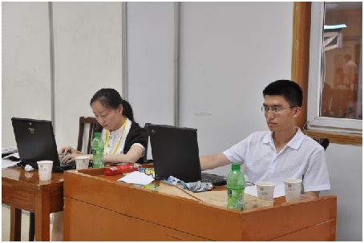

2010年全国五子棋公开赛之部分工作人员
#1 2010年全国五子棋公开赛之部分工作人员 作者：有志青年 发表时间：2010-6-18 14:47:31
2010年全国五子棋公开赛顺利落下了帷幕，在这里有那些放弃自己休息时间来帮助比赛的报道的工作人员，用自己的辛勤努力，给爱好者和选手提供了一个交流的场合。此时此景，仿佛让我重新聆听了当初在海宁殷明华老师写的那篇棋为他们带来了什么的文章，让我们用图片来记忆那些放弃休息，为五子棋运动的普及和发展参与本次活动的选手和工作人员，在端午这个节日里，请允许我代表本次比赛的举办者说声感谢！





［此帖子已被 有志青年 在 2010-6-18 14:50:17 编辑过］
#2 Re:2010年全国五子棋公开赛之部分工作人员 作者：梦婷 发表时间：2010-6-18 15:13:48
向你们致敬!你们辛苦了!#3 Re:2010年全国五子棋公开赛之部分工作人员 作者：纳米 发表时间：2010-6-18 15:44:02
可惜这次没有我#4 Re:2010年全国五子棋公开赛之部分工作人员 作者：黄药师 发表时间：2010-6-18 15:44:46
美女特别美，帅哥特别帅
#5 Re:2010年全国五子棋公开赛之部分工作人员 作者：失落刀 发表时间：2010-6-18 20:52:33
建议照片注明工作人员名字以及从事的具体什么服务工作。
话说，日本世界杯时候，有个给中国队当翻译的朋友，看了多篇文章，仍然不知道他高姓大名，我想心里感谢他，都觉得感谢的不具体。
#6 Re:2010年全国五子棋公开赛之部分工作人员 作者：孤竹 发表时间：2010-6-19 0:11:05
还是男同胞发的图好看一些，MM起码多一个，嘿嘿~#7 Re:2010年全国五子棋公开赛之部分工作人员 作者：轻 发表时间：2010-6-19 15:07:31
向你们致敬!你们辛苦了!